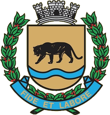

Programa Bacias Jaguariúna · Departamento de Agropecuária e Meio Ambiente
Microbacia do Rio Camanducaia · Jaguariúna/SP
Os PIPs reúnem o diagnóstico ambiental de cada propriedade rural participante e as ações previstas para adequá-la ambientalmente, conforme a Política de Mananciais dos Comitês PCJ (Deliberação n.º 307/2018). Este mapa apresenta 17 propriedades, em dois lotes. Clique em uma propriedade para ver a ficha completa.
Fontes: PIPs elaborados pela Aplicar Engenharia (2023/2024); limites dos imóveis do Cadastro Ambiental Rural (SICAR); hidrografia e APP do Programa Bacias Jaguariúna. As áreas informadas são as declaradas nos PIPs.